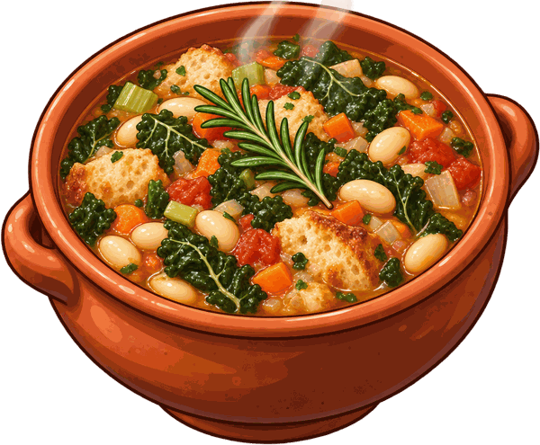

Journey city: Firenze
Ribollita

Servings4
Prep30 min
Cook3 h 30 min
Rest12 h
DifficultyMedium
Ingredients
- Dried cannellini beans (soaked 12 hours) or boiled · 300 g dry / 700 g boiled
- Black cabbage (cavolo nero) · 1 bunch (300 g)
- Savoy cabbage · 1/4
- Chard · 200 g
- Potatoes · 2
- Carrots · 2
- Celery · 1 stalk
- Red onion · 1
- Peeled tomatoes · 200 g
- Stale Tuscan bread · 300 g
- Extra-virgin olive oil · 6 tablespoons
- Salt, pepper, thyme · to taste
Step by step
- If using dried beans, cook them in unsalted water for 1.5–2 hours. Blend half the beans with some of their cooking water.
- In a large pot, let the chopped onion, carrot and celery soften in the oil for 10 minutes.
- Add black cabbage, savoy cabbage, chard and potatoes cut into pieces, then the peeled tomatoes. Cook 10 minutes.
- Add the blended and whole beans with their water. Salt, pepper and cook over low heat for about 1 hour.
- In an earthenware pot, alternate layers of bread slices and soup. Let rest overnight.
- The next day, 'reboil' the soup over low heat for 10 minutes, stirring.
- Serve with raw extra-virgin oil and, if you like, thin slices of red onion.
Chef's tip. The overnight rest is the secret: the bread soaks up the soup and the flavors come together.
Did you know? The name means 'boiled again': in the past, leftover soup was cooked again the next day, and it was even better.
Allergens: Gluten, Celery
Cook this recipe in Tavolata too
In the game you match ingredients, complete orders and restore Italian cities, from Firenze to Milano. Free, with real recipes in the Cookbook.
Download on the App StoreRecipe from the Cookbook of Tavolata: Recipe Puzzle.